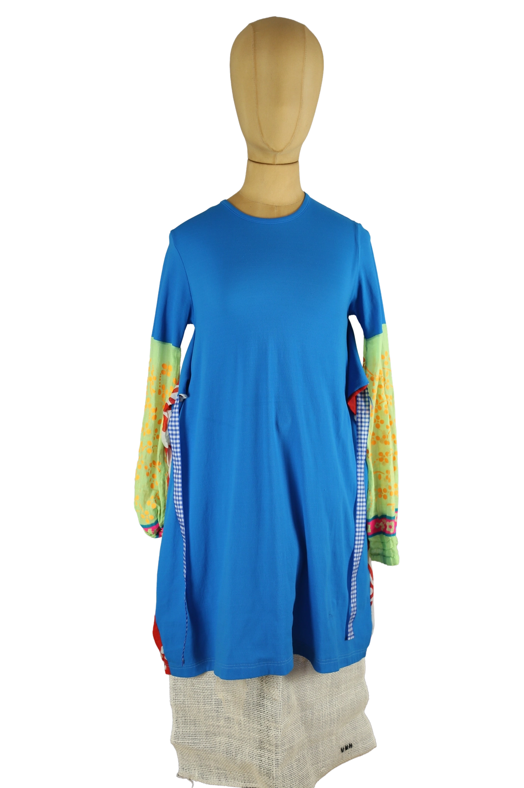

Walter Van Beirendonck
250.00 €
Aus dem kuratierten Archiv von Disorder119. Dieses Kleid von Walter Van Beirendonck zeigt die unverwechselbare Handschrift des belgischen Designers mit einem spielerischen, zugleich konzeptuell klaren Ansatz. Der dominante Blauton bildet eine ruhige Grundfläche, die durch kontrastierende Einsätze in kräftigen Farben und grafischen Mustern aufgebrochen wird. Die langen Ärmel bestehen aus unterschiedlich gestalteten Stoffbahnen mit floralen Motiven, Punkten und Streifen, was dem Piece eine collageartige Wirkung verleiht. Seitliche Stoffeinsätze und der integrierte Bindegürtel definieren die Silhouette und ermöglichen eine variable Taillierung. Das Kleid wirkt leicht, fließend und bewusst unkonventionell, mit einem starken Fokus auf Farbe, Bewegung und Individualität. Details: Marke: Walter Van Beirendonck Farbe: Blau mit mehrfarbigen Kontrasteinsätzen Größe: M Passform: Locker mit tailli
Im Archiv ansehen & in den Warenkorb →